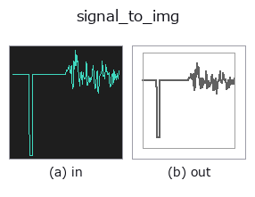

bridge op• Datenarten: signal → image
• Aufruf: fullseye.apply(img, "signal_to_img", a=0.5, b=0.5) (das 2-D-Modell ist ein Bild plus zwei skalare Regler a,b∈[0,1])

*Die Abbildung ist die tatsächliche Ausgabe auf einer synthetischen 128×128-Eingabe. Links Eingabe, rechts Ausgabe. Punktwolken als Draufsicht-Streudiagramm (Helligkeit = z), 1-D-Reihen als Linie, Volumen als Maximum-Projektion entlang z, Videos als mittleres Bild, komplexe Bilder als Betrag; Rückgabewerte, die kein Bild ergeben, werden als Werte gezeigt.*
Regler a durchfahren (0,1 / 0,5 / 0,9, der andere Regler auf Standard):
▸ signal_to_img: Regler a durchfahren (Doku-Website)
Regler b durchfahren (0,1 / 0,5 / 0,9, der andere Regler auf Standard):
▸ signal_to_img: Regler b durchfahren (Doku-Website)
Stufen (die vorangehenden Ops → dieser Op, von links nach rechts):
▸ signal_to_img: Stufen (Doku-Website)
Auf anderen Bildern (synthetische Szene / Foto / Münzen. Obere Reihe: Eingaben, untere Reihe: deren Ausgaben. Regler auf Standard):
▸ signal_to_img: andere Eingaben (Doku-Website)
Macht aus einem 1-D-signal ein Liniendiagramm und wandelt es zurück in ein Bild — der Einstieg zum „Ansehen der erzeugten Folge“.
Mit den Hinbrücken (img_to_signal / img_to_projection_profile) ließ sich aus einem Bild eine Folge erzeugen, aber es gab keine registrierte Op, um diese Folge anzusehen. Die einzigen Ops, die ein signal in ein Bild bringen können, sind die 2 von spectrogram, und beide zeichnen das Spektrum, nicht die Folge selbst. Der Abbildungsgenerator zeichnet 1-D als Polylinie, aber das ist eine Implementierung im Werkzeug, die weder aus fullseye.apply noch aus Studio aufrufbar ist. Diese Op schließt diese Lücke.
• a → Rand der senkrechten Achse pad = 0.30 * a * (Datenbreite) (bündig bei a=0, 30 % Rand oben und unten bei a=1). Bündig überlappen die Endpunkte den Rahmen.
• b → Darstellungsart. Punkte bei b < 1/3, Polylinie bei < 2/3, darüber Balken. ★Die Reihenfolge ist so gewählt, dass "der Standard-Stellknopf 0.5 die für diesen Typ natürliche Darstellung ergibt" —— für eine Folge ist die Polylinie natürlich, daher liegt die Polylinie in der Mitte.
• Die waagerechte Achse ist der Index 0..N-1, die senkrechte der Datenbereich (+ Rand). Die Achsen sind in geschlossener Form (annotate.axes_transform), daher lässt sich berechnen, auf welchem Pixel ein Wert landet.
• Rückgabewert: (128, 128) float64, dunkle Linien auf Weiß ([0,1]). ★Eine konstante Folge öffnet die kollabierte Achse um ±0.5 und zeichnet 1 horizontale Linie in der Mitte (axes_transform weist eine Achse der Breite 0 mit ValueError ab, daher wird sie hier geöffnet). Eine leere Folge ergibt ein leeres Blatt.
Einsatz: die Täler eines Projektionsprofils mit dem Auge prüfen, die Wirkung der 1-D-Funktionsfamilie (tb_smooth_funct_1d_gauss / tb_derivate_funct_1d) ansehen, direkt in Abbildungen und Artikel einfügen.
• Leitfaden zur Familie gallery2d_bridge
• Katalog der Beispieldaten (Download-URLs / Lizenzen) — 2-D nutzt skimage.data (BSD/Public Domain) plus synthetische Bilder, 3-D nennt Download-URLs echter Datenquellen (Stanford, PDS, …).
• Herkunft und Literatur der Operatoren — die Quellen der Forschung/Verfahren, auf denen diese Operatorfamilie beruht.
• Der kanonische Algorithmus (Autor, Jahr) und seine Anwendungen stehen im Familienleitfaden oben.
Das Programm unten ist nachweislich lauffähig (gleiche Eingabe wie die Abbildung). In der Studio-Hilfe wird dieser Block zu Schaltflächen, die es sofort laden und ausführen.
img_to_signal 0.50 0.50 signal_to_img 0.50 0.50
▸ Diese Pipeline laden · Laden & ausführen
• gallery2d_bridge — py -3.11 examples/gallery2d_bridge.py
image als Eingabe)identity · gaussian · mean_box · bilateral · unsharp · median · min_filter · max_filter
bridge)img_to_points · img_to_keypoints · img_to_signal · img_to_projection_profile · img_to_counts · img_to_matrix · img_to_video · img_to_volume
*Provenance: ops.py — 2D Operator-Registry. Diese Notiz wird von tools/opdocs.py md erzeugt (nicht von Hand bearbeiten).*
© 2026 Kazufumi Furuse — Fullseye operator documentation. Licensed under Apache-2.0.